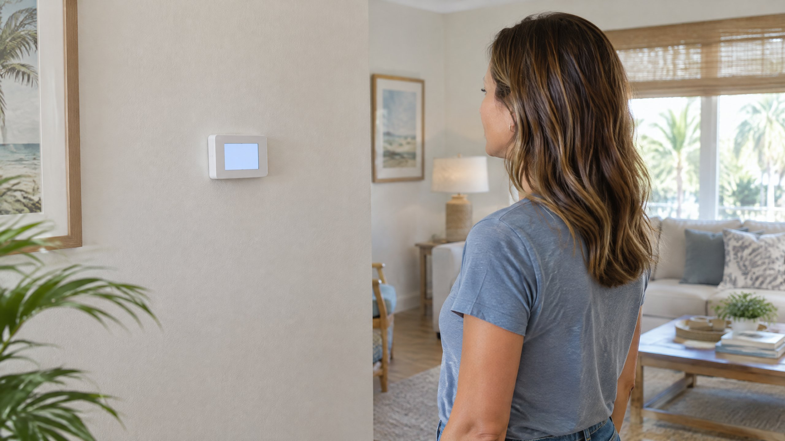

An illuminated thermostat that asks you to wait is a different situation from a screen with no display. Before replacing a thermostat or assuming the outdoor unit has failed, identify the exact message and what happened just before it appeared. A normal restart pause and an unresolved cooling problem can initially look similar.
This explanation applies to thermostat-controlled central cooling in Tampa and North Tampa homes. The message, timer, and control sequence depend on the installed thermostat and equipment. Your model's instructions take priority over a generic troubleshooting timeline.
What does the thermostat's Wait message mean?
A compressor minimum-off timer is a control that holds the compressor off for a specified interval after it stops. Honeywell Home explains that Wait, Waiting for Equipment, and a flashing Cool On can indicate this built-in compressor protection. Its purpose is to prevent the compressor from restarting too soon, not to make the room cool more quickly.[1]
The display describes a control state; it is not a parts diagnosis. Seeing Wait does not by itself prove that the thermostat, capacitor, compressor, or refrigerant circuit has failed. Equally, a delay message does not prove that the equipment will run correctly when the interval ends. The useful observation is whether the message clears and the system actually begins cooling.
Why can it appear after cooling stops or power returns?
A new cooling request shortly after shutdown can encounter a restart delay. Trane also identifies power loss as a context in which some thermostats delay startup and notes that displays may use Cool On, Starting Soon, or Wait. Check the owner's manual for the wording used by your control.[2]
If you noticed a brief interruption of power, record that fact. Do not recreate it by cycling the breaker or repeatedly switching the thermostat off and on. A restart pause is not a surge-protection promise, and it cannot establish that an outage caused no equipment damage. If power remains unstable or the AC repeatedly stops, arrange an assessment instead of continuing experiments.
In Tampa, a delay noticed after power restoration is worth separating from the home's eventual cooling recovery. The compressor starting and the room returning to the desired temperature are different events. Do not use an arbitrary room-cooling deadline to decide whether the restart timer worked.
How long should you wait before requesting help?
Use the interval documented for your thermostat model. Honeywell Home's support page describes a delay of up to five minutes under normal conditions for the thermostats it discusses. That is a manufacturer-specific example, not a universal failure threshold for every thermostat or cooling system.[1]
Note when the message appeared, leave the selected cooling mode and target unchanged, and check whether the documented interval completes. If the manual is unavailable, ask the manufacturer or your HVAC provider what the message means for that model. Do not enter installer menus or shorten a protection timer just to obtain a quicker start.
Request AC repair assessment if the message persists beyond the model's documented interval, keeps returning without sustained cooling, or disappears but cooling never begins. Tell the provider which of those patterns occurred. They are more useful than saying only that the AC took too long.
| What you observe | What it does and does not tell you | Useful next step |
|---|---|---|
| Wait appears after a recent shutdown | It may be a normal restart delay; the message alone does not confirm a fault. | Leave the controls unchanged for the model's documented interval. |
| The message clears and cooling begins | The restart sequence completed; this is not a guarantee about every part's condition. | Note the sequence and report any recurring interruptions. |
| Wait persists or repeatedly returns | The cooling request is unresolved; a particular failed component is not identified. | Request assessment with the message, model, and elapsed-time record. |
| Wait clears but the home still receives no cooling | The displayed delay ended, but another control or equipment issue may remain. | Report the separate no-cooling symptom without opening equipment. |
What can you check without changing the protection settings?
Read the displayed mode, target, room temperature, and exact status message. Confirm that the selected mode is cooling and that the target is below the displayed room temperature. If a schedule or app has changed the target, make a note of it; do not assume the change is the same thing as a compressor restart timer. DOE explains that programmable thermostats adjust temperatures on schedules and that some controls use adaptive recovery.[4]
Take a photo of the display and find the model from an accessible label, app, or existing paperwork. You do not need to remove the thermostat, expose wires, open an electrical panel, or reach into the outdoor unit. If the screen is actually dark, use the separate blank thermostat explanation; it addresses a different symptom.
Air moving from a vent also does not establish that the compressor has started. The indoor blower and cooling equipment are different parts of the system, and some fan settings allow circulation without active cooling. Our Fan Auto versus On article explains that distinction. Report what you observed rather than changing fan settings repeatedly to test the delay.
What should a technician evaluate if the delay does not resolve?
A persistent message needs the system's control sequence checked, not an automatic thermostat replacement. Honeywell Home directs unresolved-delay troubleshooting toward professional verification of thermostat voltage and wiring. ENERGY STAR identifies thermostat settings, electrical connections, and the equipment's start, run, and shutdown controls as professional check-up items.[1] [3]
Ask the provider to explain whether the control is deliberately holding a cooling request, losing power, or calling for cooling without equipment response. The findings should determine whether thermostat repair or other equipment work is appropriate. A recurring breaker trip is a separate electrical symptom; do not keep resetting a tripping AC breaker.
Frequently Asked Questions
Does Wait mean my AC is broken?
Not necessarily. It can indicate a normal compressor restart delay. The important distinction is whether the message clears within the interval documented for your model and cooling then starts. A persistent message or continued no-cooling condition needs assessment rather than a diagnosis from the display alone.
Can the indoor fan run while the thermostat is waiting?
Depending on the system and selected fan mode, the indoor blower may circulate air while the compressor remains off. Vent airflow alone is not proof of active cooling. Note the displayed message and fan setting when reporting the problem.
Will lowering the temperature cancel the delay?
A lower target is not an instruction to bypass compressor protection. Keep the cooling target steady while following the model's documented wait interval. Do not shorten protection settings or repeatedly toggle the controls to force a start.
What should I report if Waiting for Equipment never clears?
Report the exact message, thermostat model, when it appeared, any recent power interruption, and whether cooling ever resumed. Request an assessment if the documented interval has passed without resolution. Leave wiring and electrical testing to the professional.
Sources
[1] Honeywell Home: Wait, Waiting for Equipment, or flashing Cool On. Model-dependent messages, minimum-off timer, and professional follow-up; updated September 2, 2025.
[2] Trane: Why Is My Thermostat Blinking with Cool On? Restart-delay and power-restoration contexts; model instructions remain controlling.
[3] ENERGY STAR: Maintenance Checklist. Professional thermostat, connection, and equipment-control checks.
[4] U.S. Department of Energy: HVAC Programmable Thermostats. Scheduled targets and adaptive recovery, distinct from a restart-delay message.
Editorial Source Review & Publisher
Prepared for On The Way Heating & Air from the product-operation and federal references linked above. This general explanation is not an inspection of your equipment, a diagnosis, or confirmation of any individual thermostat's timing. Consult your model's instructions and request documented findings for an unresolved cooling problem.